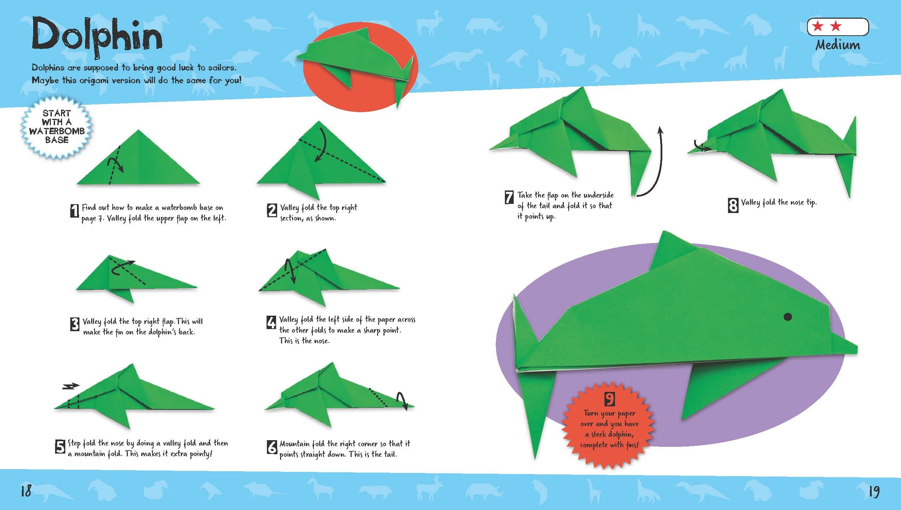

Origami designs


DOLPHINS CAN BE FOUND ALL OVER THE WORLD AND IN DIFFERENT ENVIRONMENTS
Dolphins have some of the most elaborate acoustic abilities in the animal kingdom. They make a variety of sounds including whistles, clicks, squawks, squeaks, moans, barks, groans and yelps.
Bottlenose dolphins are one of the few species, along with apes and humans, that have the ability to recognise themselves in a mirror. This is considered 'reflective' of their intelligence. Dolphins are also among the few animals that have been documented using tools. In Shark Bay in Western Australia, dolphins fit marine sponges over their beaks to protect them from sharp, harmful rocks as they forage for fish.